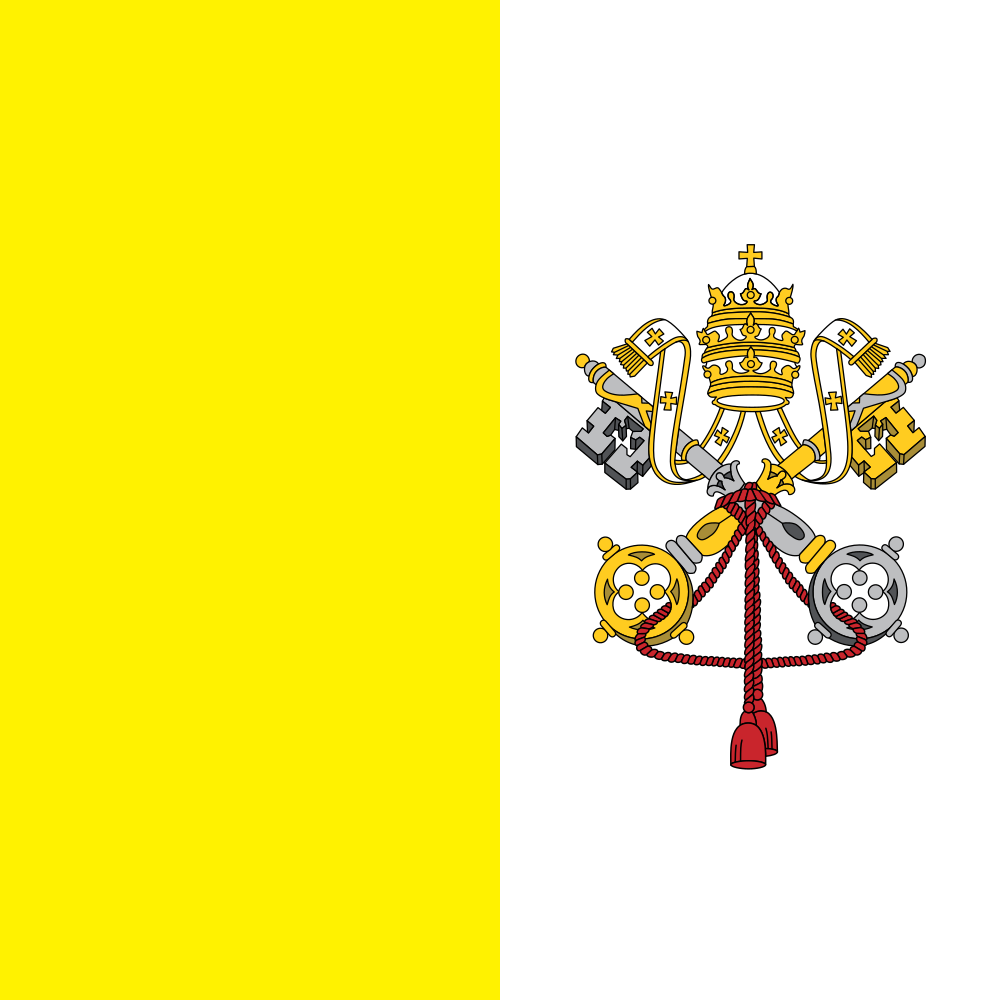

Capital city of Vatican City
Vatican City
Vatican City is a key city in Vatican City, combining landmarks, local culture, transport access and seasonal reasons to plan a visit.
City Snapshot
Vatican City connects local landmarks, visitor routes and event planning in Vatican City.
Central district is the clearest quick-reference sight for this city page.
Vatican City gives the page its wider route and destination context.
Use the events tab to jump from city context to dated OneSliders event pages.
Short facts
Worth seeing
- City centre: Visitor highlight.
- City centre: Visitor highlight.
- City centre: Visitor highlight.
 Open Vatican City
Open Vatican CityPlanning questions
What is Vatican City known for?Central district, local culture, visitor planning and events.
How should I use this page?Start with the city facts, then jump to linked events or nearby locations.
What should I check before going?Temperate to boreal, transport access and the current event calendar.
Upcoming events
 Vatican City events
Vatican City eventsKnown for
Central districtVatican CityTemperate to borealCity transitEventsVatican City